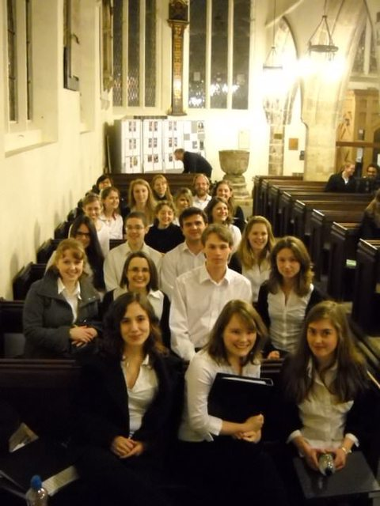

The Glee Spring 2010 concert took place at St. Helen's Church, at 7.30pm, on Tuesday 16th March.
Prior to this concert, the choir were recorded for a segment on Channel 5 News - The link to this on the old website no longer exists :(

Musical Director: Anna Stephenson
Assistant Musical Director: James Taylor
Soprano
Yvonne Chia
Isobel Cowper-Coles
Kathryn Harding
Rachel Haynes
Hannah Montague-Fuller
Katie Privett
Anna Stephenson
Claudia Stubington
Jo Vaizey
Katy Wood
Alto
Lucy Davies
Harriet Jean Evans
Sara Junger
Helen Kingstone
Lucy Pell-Walpole
Clare Rainsford
Lucy Shepherd
Victoria Touzel
Tenor
Stuart Roberts
James Taylor
Jonathan Wong
Bass
Laurent Michaux
Peter Sutton
Baillie Watterson
Bourrée for Bach (J. S. Bach arr. H. Williams)
Ave Verum Corpus (Byrd)
I Love My Love (trad. arr. Holst)
The Bluebird (Stanford)
Don't It Make My Brown Eyes Blue (Leigh arr. Woods)
The Dance, from The Bavarian Highlands (Elgar)
Interval
Moon River (Mancini arr. Lojeski)
Tea For Two (Yourmans arr. Gritton)
Marianne (trad. arr. Wilby)
Swing Low, Sweet Chariot (trad. arr. Parker/Shaw)
The Song That Goes Like This (Idle arr/ Huff)
Blue Moon (Rodgers arr. Blackwell)
Tequila Samba (Guy Turner)
«Christmas 2009« »Summer 2010»
This work is licensed under CC BY-SA 4.0